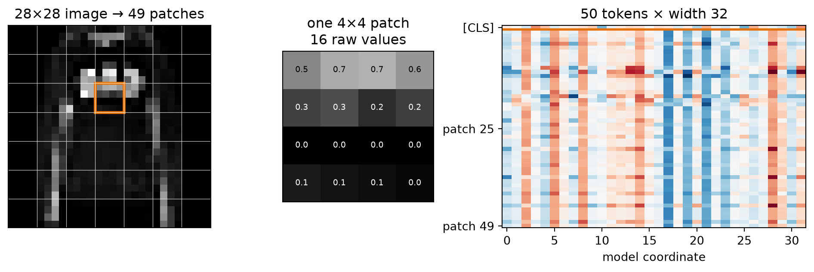
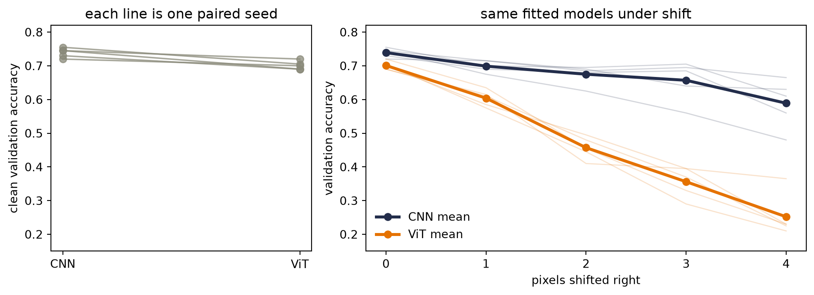

Chapter 14 promised that global routing trades away locality bias. Chapter 15 added two pieces: a learned summary token can gather a sequence for a downstream head, and pretraining is a regime, not an architecture. Let us collect those promises in one image. If a Transformer can read a sentence of words, what must change before it can read a photograph?
Surprisingly little. Cut the image into patches, project each patch to a vector, and let the Transformer encoder read those vectors as tokens. That minimalist transplant is the Vision Transformer (ViT). Its simplicity—and the freedom it creates—is also the source of the interesting question. A convolutional network arrives knowing that nearby pixels belong together and that one local detector should slide across the image. ViT arrives with a much weaker image-specific prescription. Which learner wins therefore depends not just on architecture, but on data, training, and scale.
That word—scale—will change jobs halfway through the chapter. First it will mean making an image model deeper, wider, or higher-resolution. Then it will mean fitting empirical laws that connect loss to parameters, tokens, and training compute. The bridge between the two meanings is resource allocation: what should we enlarge, and what must grow with it?
16.1 Let the image become a sequence
Start with the arithmetic used by the original ViT. A color image is \(224\times224\) pixels, and each square patch is \(16\times16\). There are
patches. Each patch contains \(16\times16\times3=768\) raw channel values. So one image has become a sequence of 196 vectors, each initially 768-dimensional—already the same width used by the base Transformer in that paper.
where \(B\) is batch size, \(C\) channels, and \(H,W\) are spatial dimensions. For a square patch width \(P\) that divides both \(H\) and \(W\), the patch count is
We can see this on the fixed Fashion-MNIST subset first opened in Chapter 6. The \(28\times28\) grayscale images divide into \(7\times7=49\) patches when \(P=4\).
Code: imports, the fixed Chapter 6 split, and image shapes
projects every raw patch to model width \(d\). The operation has a useful exact identity. Unfold the image, multiply each flattened patch by \(\matr{E}\), and add a bias—or reshape the columns of \(\matr{E}\) into \(d\) convolutional kernels with kernel size \(P\) and stride \(P\). The two computations are the same linear map.
Figure code: patchify and verify unfold-plus-linear equals one strided convolution
raw patches: (1, 49, 16)
projected tokens: (1, 49, 32)
max |linear - convolution|: 7.15e-07

Figure 16.1: An image becomes a sequence. A 28×28 garment is divided into 49 nonoverlapping 4×4 patches (left); one patch contains 16 raw values (center); a shared linear projection maps every patch to width 32, and a separate learned [CLS] row is prepended (right). The displayed projection is random arithmetic, not a trained representation.
This identity is more than a coding shortcut. The patch projection is a learned, shared local operator—a thin residue of image structure at ViT’s front door. What changes is what happens next: instead of stacking local feature maps, we hand the patch sequence to global self-attention.
TipPatchify once, audit twice
Check that \(P\) divides both spatial dimensions, assert the patch and token shapes, and compare unfold-plus-linear with the equivalent convolution to numerical roundoff. Patchification silently changes sequence length, feature width, and the attention bill; one shape mistake propagates through the entire model.
16.2 A learned meeting place for patches
The projected patches still need two additions. First, prepend a learned vector \(\vect{x}_{\mathrm{CLS}}\in\mathbb{R}^{d}\). Second, add one learned position vector to every sequence slot. For image \(b\), ViT’s complete encoder input is
where \(\vect{x}_p^{i}\in\mathbb{R}^{CP^2}\) is flattened patch \(i\), \(\matr{E}\in\mathbb{R}^{CP^2\times d}\) is the shared patch projection, and \(\matr{E}_{\mathrm{pos}}\in\mathbb{R}^{(N+1)\times d}\) contains learned absolute position vectors.
[CLS] is not a summary by birth. As in Chapter 15, it is a learned meeting place whose downstream loss teaches it what to gather. Every encoder layer lets that row query the patch rows; after the final layer, a linear head reads its \(d\) coordinates and produces class logits. The original ViT appendix found that class-token and global-average-pooling heads worked similarly after tuning their learning rates. [CLS] is a useful interface—not proof of a superior pooling rule.
Position is essential for a different reason. Without positional information, self-attention is permutation-equivariant: permuting patch rows produces the same permutation of output rows. A symmetric pooling rule can consequently become invariant to patch order, unable to distinguish a sleeve above a shoe from a shoe above a sleeve. Learned positions break that symmetry. In the original ablation, removing position hurt, while learned 1-D, learned 2-D, and relative alternatives performed similarly in that setting. The result supports supplying geometry; it does not establish one universal positional scheme.
ViT then reuses Chapter 14’s pre-LayerNorm encoder block. With \(\matr{Z}_{\ell-1}\in\mathbb{R}^{B\times(N+1)\times d}\),
The residual stream, LayerNorm axis, multi-head routing, and position-wise MLP are unchanged. This is an encoder-only classifier, so there is no causal mask and no decoder. Pre-LayerNorm gives gradients a cleaner residual path; it does not make optimization automatic. The original ViT training recipe still used learning-rate warmup.
16.3 Inductive bias strikes again
Chapter 6 called constraints a form of knowledge. Inductive bias strikes again, this time as a trade. Convolution spends flexibility to buy locality and translation equivariance; ViT gives back much of that image-specific prior and must purchase useful geometry with data, optimization, or a new architectural constraint.
Convolutional network
Vision Transformer
Local, spatially shared kernels
Content-dependent routes between all patch tokens
Translation equivariance built into feature maps
Geometry supplied mainly by patches and position vectors
Global sight accumulated through depth
Every patch reachable in one attention layer
Strong image-specific prior
More freedom, and greater dependence on the training regime
“Less image-specific bias”—not “no bias”—is the precise phrase. Patchification is local, the same projection is shared over the grid, positions identify slots, and the usual optimizer and architecture choices contribute biases of their own. ViT did not remove assumptions. It changed which assumptions were paid for in code and which had to be learned from examples.
That freedom has a computational price. Ignoring [CLS] for the cleanest count, changing a \(224\times224\) image from \(P=32\) to \(P=16\) changes the patch count from \(49\) to \(196\): four times as many tokens. Each attention head’s score matrix therefore grows from \(49^2=2{,}401\) to \(196^2=38{,}416\) entries—sixteen times as many. At \(1024\times1024\) with \(P=16\), there are 4,096 patches—and the score matrix has about 437 times as many entries as the \(224\times224\) case.
Do not shorten this to “the whole Transformer is quadratic.” Attention mixing costs \(O(N^2d)\), while the projections and feed-forward layers contribute terms like \(O(Nd^2)\). Which term dominates depends on both token count and width. The quadratic term becomes especially painful when resolution rises or patches shrink.
16.4 A Fashion rematch, not a referendum
The original ViT paper warns us that regime matters. Before looking at its large pretraining experiments, let us deliberately choose the opposite regime: 1,000 Fashion-MNIST fitting images, no pretraining, and models small enough to inspect.
The ViT uses \(4\times4\) patches, width 32, four heads, two pre-LayerNorm blocks, and feed-forward width 64. Its 49 patch tokens plus [CLS] make a 50-token sequence. The convolutional baseline uses four \(3\times3\) layers, two max pools, and global average pooling. Their parameter counts differ by about 3%. Both use the same initialization family, optimizer, update count, seed, and explicit minibatch order.
The implementations below are derived independently from the chapter equations. There is no imported ViT package hiding extra training machinery.
Code: independently define the tiny ViT and parameter-matched CNN
For one \(28\times28\) image, a simple multiply–accumulate ledger gives about 1.19 million for the CNN and 1.16 million for the ViT, a 1.8% difference. That ledger counts convolution, linear, and attention matrix products; it omits normalization, activations, softmax, pooling, memory traffic, and implementation effects. It is a useful dot-product proxy—not measured FLOPs, speed, or energy. Appendix C supplies the missing byte ledger and Roofline model, including why neither an operation count nor a dtype alone predicts elapsed time.
The training protocol uses AdamW for 120 epochs, a cosine learning-rate schedule, and batches of 100. For each seed, one explicit list of permutations is handed to both architectures. Resetting the seed before each model makes initialization reproducible; sharing the permutation list makes minibatch order exactly equal. The schedule hash makes that equality inspectable rather than aspirational.
Code: define the explicit paired schedule, training loop, and shift audit
The five paired runs use one cell per seed so that each training cell stays within the chapter’s execution budget. The split is only operational—all five rows enter one analysis.
Figure code: show every paired clean result and every shift curve
by_model = { name: [row for row in fashion_results if row["model"] == name]for name in ("CNN", "ViT")}for name in by_model:assert [row["seed"] for row in by_model[name]] == SEEDScolors = {"CNN": "#232D4B", "ViT": "#E57200"}fig, axes = plt.subplots(1, 2, figsize=(10, 3.7), gridspec_kw={"width_ratios": [0.8, 1.35]})for index, seed inenumerate(SEEDS): pair = [ by_model["CNN"][index]["validation"][0], by_model["ViT"][index]["validation"][0], ] axes[0].plot([0, 1], pair, "o-", color="#8A8A7A", alpha=0.75, lw=1.3)axes[0].set_xticks([0, 1], ["CNN", "ViT"])axes[0].set_ylabel("clean validation accuracy")axes[0].set_title("each line is one paired seed")shifts = np.arange(5)for name in ("CNN", "ViT"): curves = np.array([row["validation"] for row in by_model[name]])for curve in curves: axes[1].plot(shifts, curve, color=colors[name], alpha=0.2, lw=1) axes[1].plot(shifts, curves.mean(0), "o-", color=colors[name], lw=2.6, ms=6, label=f"{name} mean")axes[1].axhline(0.1, color="#B8B8A8", ls=":", lw=1)axes[1].set_xticks(shifts)axes[1].set_xlabel("pixels shifted right")axes[1].set_ylabel("validation accuracy")axes[1].set_title("same fitted models under shift")axes[1].legend(frameon=False)for axis in axes: axis.set_ylim(0.15, 0.82)plt.tight_layout()plt.show()for name in ("CNN", "ViT"): rows = by_model[name] mean_train = np.mean([row["train"] for row in rows]) mean_val = np.mean([row["validation"][0] for row in rows]) mean_test = np.mean([row["benchmark"] for row in rows]) mean_shift4 = np.mean([row["validation"][4] for row in rows])print(f"{name}: train {mean_train:.1%}; clean validation {mean_val:.1%}; "f"benchmark {mean_test:.1%}; validation at 4px {mean_shift4:.1%}" )

Figure 16.2: Five parameter- and schedule-matched runs on the fixed Chapter 6 split. Every line at left is one paired clean-validation comparison. At right, thin lines are individual seeds and thick lines are means under zero-padded right shifts; the operation also clips pixels at the right boundary. The CNN’s flatter curve is consistent with its local sharing and pooling, not a causal isolation of any one component.
The result is sharper than a one-number leaderboard—it separates fitting from generalization. The ViT interpolates the fitting set in every run—100.0% mean training accuracy—but averages 70.1% on clean validation images. The CNN fits only 87.9% of the training labels under the shared recipe yet averages 73.9% on validation, winning all five paired comparisons. On the already-opened 600-image benchmark, the same means are 73.3% and 77.9%.
Under a four-pixel shift, the validation means separate much more: 25.2% for ViT and 58.9% for CNN. The zero-filled shift also clips garment content—a reminder that the right edge is lost—so neither curve measures pure translation equivariance. Still, the contrast is consistent across the five fitted pairs with what Chapters 7–9 built into the CNN: local sharing, pooling, and a position-discarding global-average head.
WarningTrap: a rematch is a regime, not a referendum
These runs match the data split, parameter scale, optimizer, update count, minibatch order, and seeds. Their dot-product ledgers are close as well. They do not match architecture-specific tuning, every operation, wall-clock cost, or pretraining. The five runs vary initialization and order while holding one split fixed, so they are not population uncertainty estimates. The 600-image benchmark was opened in earlier chapters and is descriptive, not a fresh final test. This experiment tells us what happened here; it does not rank CNNs and ViTs in general.
16.5 Scale changes the comparison
Now harvest Chapter 15’s second promise: pretraining is a regime, not an architecture. ViT keeps the encoder pattern but changes the tokens, source data, and task. In the original work, the decisive source task was supervised image classification—not BERT-style masked prediction—and the amount of source data changed the comparison.
The authors pretrained matched families on random subsets of JFT containing 9, 30, and 90 million images, plus the full 300-million-image dataset. These are four measured regimes—not points on a smooth curve we are free to invent. ViT-B/32 was slightly faster than the compared ResNet-50, performed much worse on the 9-million subset, and performed better at 90 million images and above. The analogous ViT-L/16 versus larger ResNet comparison followed the same regime change.
That does not prove “attention scales forever” or that data erases every useful prior. It demonstrates the narrower—and more valuable—point: the architecture ranking can reverse when the training regime changes. Our 1,000-example scratch run and the paper’s large-source-pretraining run answer different questions.
Three places to buy back useful bias
Pure global attention is not the only possible endpoint. Later designs put useful image structure back in at different places.
Where the prior enters
Example
What changes
Input
Hybrid CNN–ViT
A convolutional stem creates local feature tokens before global routing
Routing
Swin Transformer
Shifted local windows and a hierarchy constrain attention and control resolution cost
Training signal
DeiT
Strong augmentation and a convolutional teacher improve data efficiency without changing the student’s basic patch encoder
DeiT makes a particularly human point. A teacher provides another target, but it does not replace the ground-truth label. Students can become better than the instructor: they listen, see other evidence, and decide for themselves. In DeiT’s hard-distillation version, a distillation token learns from the teacher’s predicted class while [CLS] learns from the true class; the two heads are combined at inference. The teacher changes supervision, not the identity of the student.
ConvNeXt prevents a lazy conclusion in the opposite direction. Its study first modernized the training recipe, then progressively changed a ResNet toward design choices associated with contemporary Transformers. The training recipe alone raised the reported ResNet-50 ImageNet-1K accuracy from 76.1% to 78.8% before the architectural sequence was complete. Architecture, augmentation, optimization, and data interact—“CNN versus Transformer” is rarely a comparison between two isolated operators.
16.6 The word “scaling” changes jobs
We have now used scaling in two different ways. EfficientNet asks how to enlarge one architecture family under a compute multiplier. Kaplan and Chinchilla ask how measured loss changes as parameters, data, and training compute grow. One is a design rule; the other is an empirical forecast.
Compound scaling: three knobs, one budget
Suppose a baseline convolutional network has depth \(d_0\), channel width \(w_0\), and input resolution \(r_0\). Scaling just one knob creates a bottleneck elsewhere—a deeper network still sees the same pixels, a wider network still has the same receptive-field schedule, and higher resolution asks an unchanged feature extractor to digest more detail. EfficientNet couples the knobs with one coefficient \(\phi\):
For ordinary dense convolutions, the leading operation count scales roughly as
\[
\operatorname{FLOPs}\propto d\,w^2r^2.
\]
Therefore one step in \(\phi\) multiplies the proxy by
\[
\alpha\beta^2\gamma^2\approx2.
\tag{16.4}\]
EfficientNet’s grid search on its baseline found approximately \(\alpha=1.2\), \(\beta=1.1\), and \(\gamma=1.15\). Their product is 1.92027—not exactly two, but close enough to serve as the intended budget step.
Figure code: audit the EfficientNet compound-scaling constraint
Figure 16.3: EfficientNet’s published compound multipliers. Each step in φ grows depth, width, and resolution modestly; their approximate convolutional-operation proxy grows by 1.92027 per step. These are normalized design multipliers, not measured accuracy or runtime.
The constants are an empirical design choice from a particular search and model family, not a law that every network must obey. The durable lesson is the budget discipline—when several resources jointly limit performance, scaling one while freezing the others can spend compute badly.
16.7 A fitted power law, not a promise
Kaplan and colleagues asked a different question about decoder-only language models. Holding other resources out of the way, how does test cross-entropy \(L\) change with non-embedding parameters \(N\), dataset tokens \(D\), or compute-optimally allocated training compute \(C_{\min}\)? Across their measured regime, the answer was well described by power laws:
Here \(N_c,D_c,C_c\) are fitted scale constants. Their values depend on the data, tokenizer, vocabulary, loss definition, and compute units—the small exponents are the more portable description of diminishing returns. These are conditional fits. The parameter curve assumes data is not the bottleneck, and the data curve assumes model capacity is not the bottleneck.
A power law becomes a straight line after taking logs:
\[
\log L=\log K-\alpha\log x.
\]
That makes extrapolation visually tempting: fit a line—extend it—and read a future loss. But a straight line on transformed axes does not repeal the conditions that produced it.
Figure code: turn the published Kaplan exponents into auditable multipliers
Figure 16.4: Implications of Kaplan et al.’s published exponents, normalized to one at the left endpoint. The markers and lines are calculated from the fitted laws—not raw training runs from this book. Even a thousand-fold resource increase leaves a substantial fraction of the fitted component, which is the arithmetic of diminishing returns.
The doubling arithmetic is now pinned. Twice as many parameters multiplies the fitted parameter-limited loss by \(2^{-0.076}=0.949\), a 5.1% reduction. Doubling nonredundant data gives \(2^{-0.095}=0.936\), a 6.4% reduction. Doubling optimally allocated compute gives \(2^{-0.050}=0.966\), a 3.4% reduction. Comparing those percentages does not say that one parameter and one token have comparable cost or value—the units, constants, and constraints differ.
NoteA scaling law is a fitted conditional
The measured range, data distribution, objective, architecture family, optimizer, and nonbinding-resource assumptions are part of the result. An extrapolation is a forecast under continued conditions, not a guarantee. Kaplan’s basic one-variable fits above do not contain an explicit additive \(1.69\) floor; that constant belongs to the later Chinchilla joint fit.
Kaplan’s compute-optimal analysis suggested spending additional compute mostly on parameters:
That recommendation was influential—and it was later revised by a study designed to measure the allocation more directly.
16.8 Compute-optimal means balanced
Hoffmann and colleagues trained more than 400 language models while varying model size and token count. Their Chinchilla study estimated the compute-optimal frontier three ways.
Fitting approach
\(N_{\mathrm{opt}}\) exponent
\(D_{\mathrm{opt}}\) exponent
Minimum over training curves
0.50
0.50
IsoFLOP profiles
0.49
0.51
Parametric loss model
0.46
0.54
The exact answers differ—especially under long extrapolation—but all three move much more of the growing budget toward data than Kaplan’s \(0.73/0.27\) allocation. That agreement is the central result—not one immortal ratio.
\(E\) is the fitted irreducible term for that distribution and objective; \(A/N^\alpha\) is the model-limited contribution; and \(B/D^\beta\) is the data-limited contribution. This decomposition is empirical. It is not a theorem that every language model has exactly three such terms.
For a dense Transformer, the study uses the approximation
\[
C\approx6ND,
\tag{16.6}\]
where \(C\) is training floating-point operations, \(N\) is non-embedding parameters, and \(D\) is processed training tokens. The factor six approximates a forward pass plus a backward pass. It omits context-dependent and embedding details, so it is a planning equation rather than a profiler.
Fixing \(C\) forces \(D=C/(6N)\). Too large a model leaves too few tokens; too many tokens leave too little model. Substituting the constraint into Equation 16.5 and differentiating gives
The rounded constants imply exponents 0.452 and 0.548, close to the reported parametric-frontier fit of 0.46 and 0.54. At the reference budget \(C=5.76\times10^{23}\), this particular fitted surface reaches its minimum near 32.2 billion parameters and 2.98 trillion tokens. The other two methods place the model farther right, in roughly the 40–70 billion range. The paper chose 70 billion parameters and 1.4 trillion tokens for Chinchilla, at the upper end of that range, partly for data and computational efficiency.
Figure code: separate the joint-fit optimum from the 20-token heuristic
Figure 16.5: One reference iso-compute curve under the published Chinchilla parametric loss fit. The rounded joint fit reaches its mathematical minimum near 32.2B parameters; the separate 20-tokens-per-parameter heuristic lands near 69.3B/1.386T, close to the 70B/1.4T Chinchilla design. A Gopher-sized 280B allocation leaves far fewer tokens. The curve is a fitted surface evaluation, not a new training experiment.
This distinction matters. The memorable 20 tokens per parameter comes from the near-balanced frontier estimated by the first approaches: their table gives about 20.2 billion tokens for 1 billion parameters, 205.1 billion for 10 billion, and 1.5 trillion for 67 billion. If we impose the rounded heuristic \(D\approx20N\) at the \(5.76\times10^{23}\) budget, Equation 16.6 gives
That arithmetic is close to the actual Chinchilla design, but it is not the minimum of the rounded joint fit drawn above. Different fitting methods produced a broad range, and the authors made an engineering choice within it. Hiding that difference would make a heuristic look more exact than the evidence.
The historical comparison makes the allocation tangible. Gopher used about 280 billion parameters and 300 billion training tokens. Chinchilla used 70 billion parameters and 1.4 trillion tokens: four times fewer parameters and about 4.7 times more tokens, at approximately the same reported training budget. The smaller, longer-trained model achieved lower loss and outperformed the larger model across the paper’s broad evaluation suite. More parameters had not been the only way to spend the budget—and, in that regime, they had not been the best way.
WarningTwenty is not a constant of nature
The 20-to-1 ratio is an approximate rule from this study, model family, data, and frontier. The fitted methods do not agree exactly, and the ratio changes weakly with compute even inside the parametric model. Data quality, repetition, tokenization, objective, architecture, and downstream use can all move the useful allocation. Use the rule to challenge an obviously undertrained model, not to end the analysis.
16.9 Where the forecast stops
Scaling laws are powerful precisely because they compress many expensive runs into a small predictive object. That compression has boundaries.
Loss is not a capability map. A smoother aggregate cross-entropy curve does not tell us that every downstream skill appears smoothly, or exactly when a particular behavior becomes reliable.
Tokens are not interchangeable. A trillion repeated, low-quality, contaminated, or mismatched tokens need not buy what a trillion useful, diverse tokens buy. \(D\) counts processed tokens; it does not measure novelty or truth.
The law is local to a recipe and range. Change the architecture, optimizer, data mixture, context length, or evaluation distribution and the fitted constants can move. Extrapolation beyond the measured range adds uncertainty even when the line looks immaculate on log–log axes.
Training-optimal is not serving-optimal. Chinchilla allocates a training budget; it does not make the resulting backbone cheap to store, run, or adapt. Chapter 17 will harvest that mismatch: what can we change when moving every pretrained weight is no longer affordable?
This closes Part IV’s route from fixed lookup to global learned routing. We began with a memory bank, learned how to score it, let every token query every other token, changed the visibility to pretrain representations, and finally let images enter as tokens. The operator was only half the story. The data and budget that train it are part of the model too.
NoteCheck yourself
Close the book for one minute and retrieve the chapter’s three scales.
For a 28×28 image with 4×4 patches, how many patch tokens appear before [CLS]?
Why does a matched toy CNN–ViT rematch describe a regime rather than declare a winner?
Under fixed training compute, why must parameter count and token count be chosen together?
16.10 Okay, so — patches become tokens, but regime still matters
An image can become a token sequence. Split it into \(P\times P\) patches, flatten to width \(CP^2\), and share a learned projection. Unfold-plus-linear is exactly a convolution with kernel and stride \(P\) after reshaping its weights.
ViT is an encoder transplant, not assumption-free learning. A learned [CLS] meeting place, learned positions, pre-LayerNorm blocks, and a linear head reuse the Transformer pattern while retaining a small set of image and optimization biases.
Inductive bias is a trade. The five-seed Fashion rematch favors the CNN on clean validation and much more strongly under shift, but it is a tiny scratch regime—not an architecture referendum. Large supervised pretraining changed the comparison in the original ViT study.
Architecture and recipe cannot be cleanly collapsed into a brand name. Hybrid stems, windowed routing, distillation, and ConvNeXt put priors in different places. Data, optimization, and operator design interact.
Scaling has two meanings here. EfficientNet’s compound rule coordinates depth, width, and resolution; empirical scaling laws forecast loss as parameters, tokens, and compute change. Both are resource-allocation tools, but they answer different questions.
Compute-optimal training balances model and data. Chinchilla revised the parameter-heavy Kaplan allocation, while also showing why a memorable 20-token heuristic must remain a heuristic. A fitted law carries its regime, assumptions, and uncertainty with it.
(Pencil.) A batch contains 12 RGB images at \(384\times384\). With \(P=16\) and model width \(d=768\), give the shapes of the raw batch, flattened patch tensor, projected patches, and sequence after [CLS]. Repeat the token and per-head score-entry counts for \(P=8\). By what factor did halving \(P\) change each count?
(Code and proof.) Generalize the patch-equivalence cell to \(C=3\) and a rectangular image whose height and width are each divisible by \(P\). State the required unfold ordering, reshape a matrix \(\matr{E}\in\mathbb{R}^{CP^2\times d}\) into convolution weights, and assert equality to numerical tolerance. Explain why overlap appears when stride is smaller than \(P\).
(Experimental audit.) Reproduce all five paired Fashion results and compute the paired clean-validation gaps, clean-to-four-pixel drops, and schedule hashes. Then change exactly one factor—add translated training examples—while keeping the split, seeds, initialization rule, model sizes, and minibatch schedules auditable. What question does the new comparison answer, and what still prevents a general CNN-versus-ViT claim?
(Scaling arithmetic.) Using EfficientNet’s published constants, compute the depth, width, resolution, and operation-proxy multipliers at \(\phi=3\). Then use Kaplan’s exponents to compute the fitted component remaining after a 10-fold increase in parameters, data, and compute. Why can you not compare those three numbers as benefits per dollar?
(Derivation and interpretation.) Starting from Equation 16.5 and Equation 16.6, derive Equation 16.7. Evaluate both the joint-fit optimum and the separate \(D=20N\) heuristic at a budget of \(1.2\times10^{22}\) FLOPs. Explain why disagreement between the answers is evidence to report rather than an algebra mistake, and name two deployment constraints neither calculation optimizes.